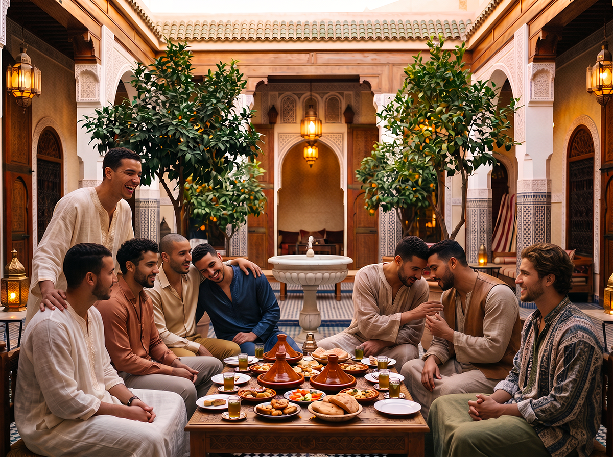
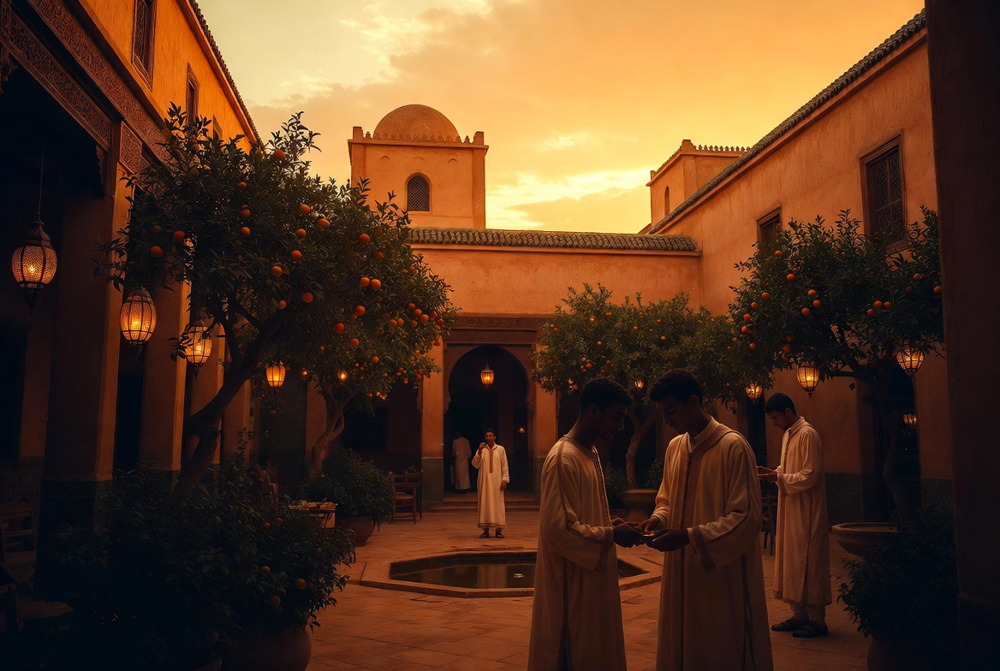
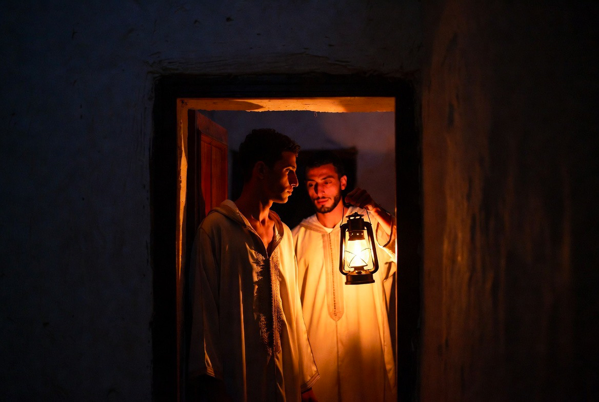
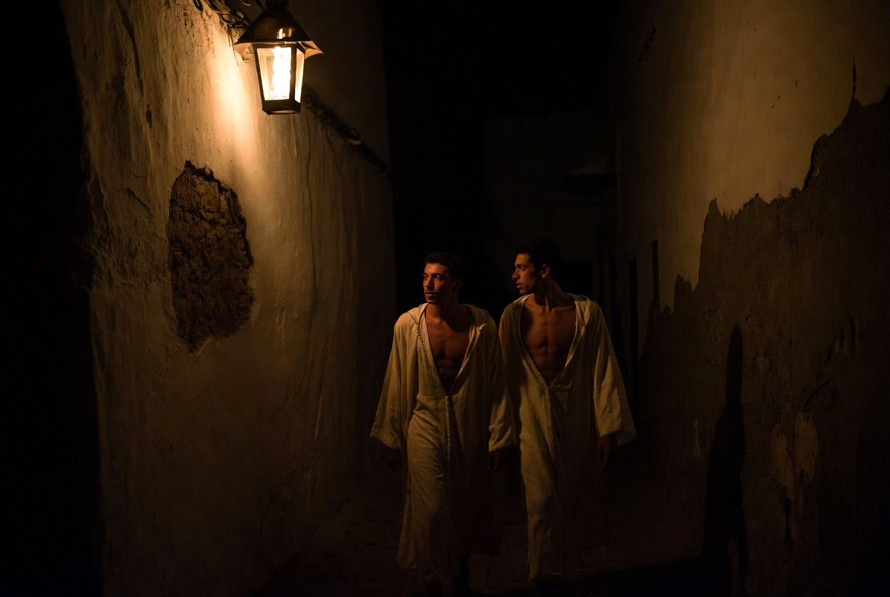

RYTHME
Vie au Riad
Une journée ordonnée : cinq prières, travail, formation, repas, silence.


Fajr
L’aube. Prière, silence, début de la journée.

Dhuhr
Midi. Prière, puis le repas partagé sous la lumière du patio.

Asr
L’après-midi. Ateliers, métiers, formation du geste.

Maghrib
Le coucher du soleil. Prière, lumière d’or dans le patio.

Isha
La nuit. Prière, retrait, conversation discrète.

